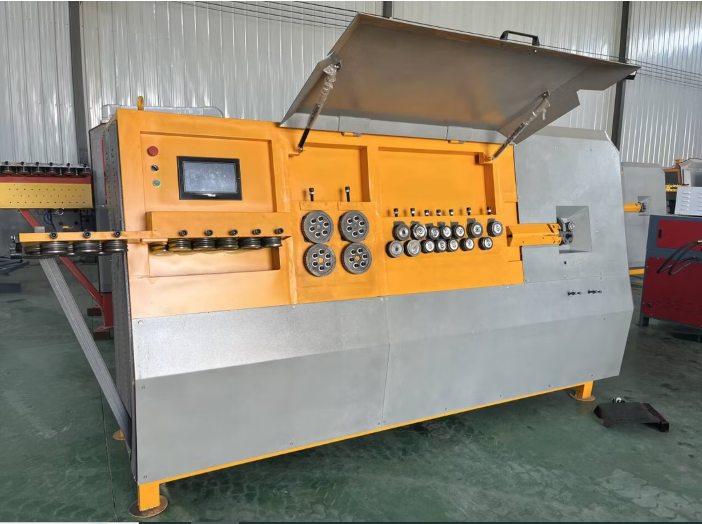
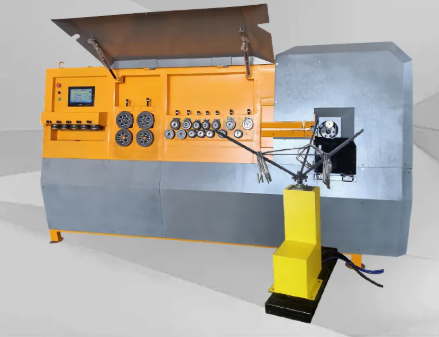
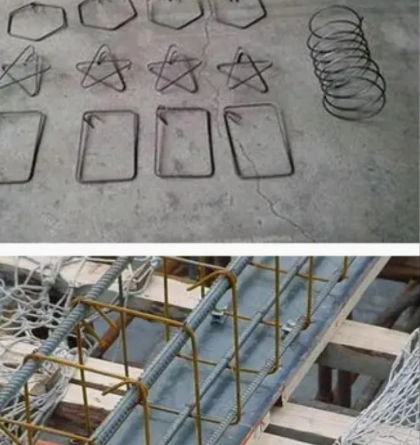

Presupuesto Máximo Asignado
$8,000 USD
1. Especificaciones Técnicas

Imagen de referencia visual: No es obligatorio que el equipo a cotizar posea exactamente este mismo diseño.
El agente debe buscar equipos que cumplan o superen las siguientes capacidades:
-
Tipo de Equipo: Máquina de plegado de estribos CNC automática (sistema hidráulico o servomotor).
-
Capacidad (Un hilo): Procesamiento de diámetros entre 4 mm y 12 mm.
-
Capacidad (Doble hilo): Procesamiento de diámetros entre 4 mm y 10 mm.
-
Materiales: Acero al carbono, acero inoxidable, acero redondo liso y acero corrugado.
Ajuste Eléctrico
La máquina DEBE venir configurada de fábrica para operar a 220V. Asegurar que motores y electrónica estén adaptados antes del envío.
Sistema de Control CNC
La interfaz del panel de control y el software de configuración DEBEN estar disponibles en idioma Español.
2. Accesorios Obligatorios
Estante Porta-Rollos (Pay-off / Wire Stand):
Es de carácter obligatorio que la máquina se suministre con el estante/dispensador para los rollos de alambre. No se aceptarán cotizaciones que no lo incluyan en el paquete.
Estante de Recepción Giratorio:
El estante de recepción de material (donde caen los estribos terminados) y la máquina dobladora de barras de acero deben estar interrelacionados y poder girar.

Énfasis visual: Estante de recepción receptor interrelacionado.
Video: Estante Funcionando:
3. Repuestos y Garantía
Kit de Repuestos
El fabricante debe detallar por escrito un listado claro de los repuestos (spare parts) incluidos con la compra.
Acuerdo de Repuestos
Se debe negociar que el fabricante provea repuestos sin costo adicional por un período mínimo de un (1) año tras la compra.
4. Instrucciones de Inspección para el Agente
Verificación de Funcionamiento
Solicitar pruebas o videos de la máquina operando con acero corrugado a las máximas capacidades requeridas.
Verificación de Idioma y Voltaje
Confirmar presencialmente o por video que el panel está en español y la placa del motor indica 220V.
5. Velocidad de Producción y Resistencia Operativa
El proveedor debe responder cada punto por escrito. Estos datos son determinantes para evaluar si la máquina soporta las jornadas de trabajo reales sin comprometer la calidad ni la vida útil del equipo.
¿Cuántos estribos por hora puede producir la máquina en condiciones normales de operación?
Pedir el dato para un estribo estándar (ej. cuadrado de 20×20 cm, varilla de 8 mm) como referencia base.
¿La velocidad de producción varía según el diámetro del alambre o la complejidad de la forma?
Solicitar tabla o rango de velocidad para diámetros de 4 mm, 8 mm y 12 mm.
¿Cuál es la velocidad máxima de alimentación del alambre (metros por minuto)?
Este dato permite estimar el rendimiento real independientemente del tipo de estribo.
¿Cuántas horas continuas puede operar la máquina sin necesitar pausas por temperatura o desgaste?
Determinar si soporta jornadas de 8, 10 o 12 horas continuas sin degradar el rendimiento.
¿La máquina tiene sistema de protección contra sobrecalentamiento? ¿Cómo actúa?
Verificar si detiene la operación automáticamente, emite alerta o simplemente no tiene protección térmica.
¿Qué mantenimiento requiere la máquina durante o entre jornadas para garantizar su funcionamiento óptimo?
Lubricación, revisión de pines, limpieza de viruta, etc. Solicitar el manual de mantenimiento preventivo.
Importante: Desconfiar de proveedores que no puedan dar cifras concretas de velocidad. Solicitar siempre el dato en estribos/hora con una referencia de forma y diámetro específicos, no en términos generales.
6. Capacidad de Formas y Figuras
Las siguientes preguntas deben ser planteadas al proveedor durante la cotización. Se recomienda solicitar respuestas por escrito y, cuando sea posible, con demostración en video.

Imagen de referencia para mostrar al proveedor y consultar cuáles de estas formas puede producir la máquina.
¿Cuántas formas o figuras distintas puede producir la máquina en total?
Solicitar el número exacto o el catálogo completo de formas disponibles.
¿Las formas vienen predeterminadas de fábrica o el operario puede programar formas nuevas?
Determinar si el sistema es cerrado (solo formas fijas) o abierto (permite programación personalizada desde el panel).
Si se pueden crear formas personalizadas, ¿cómo se programa una forma nueva desde el panel CNC?
Pedir una demostración o video del proceso de programación paso a paso.
¿Puede la máquina producir todas las formas que aparecen en la imagen de referencia?
Mostrar la imagen al proveedor y pedir confirmación forma por forma. Si alguna no es posible, que lo indique por escrito.
¿Qué formas o configuraciones NO puede realizar esta máquina?
Exigir una lista clara de las limitaciones. Desconfiar de proveedores que afirmen que "puede hacer todo".
¿Cuál es el ángulo mínimo y máximo de doblez que admite la máquina?
Verificar el rango de ángulos por doblez y si aplica igual para todos los diámetros de alambre.
¿Cuántas formas pueden almacenarse en la memoria del controlador CNC?
Conocer la capacidad de almacenamiento del sistema para planificar la operación con múltiples referencias.
Importante: Solicitar al proveedor un video de la máquina produciendo al menos 3 formas distintas con acero corrugado antes de cerrar cualquier negociación.